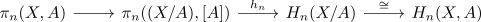

hurewicz homomorphism for pairs of spaces
Proposition
Let $(X,A)$ be a cofibred pair then the relative hurewicz homomorphism is defined as
\begin{align*}
h_n: \pi_n(X,A) \rightarrow& H_n(X,A) \\
[f] \mapsto& f_*[D^n, S^{n+1}]
\end{align*}
analogously to
Proof
This map factors for a cofibred pair $(X,A)$

where